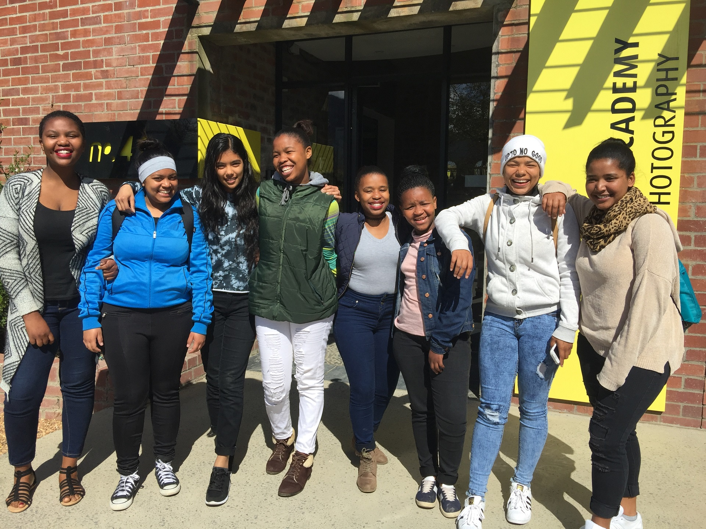
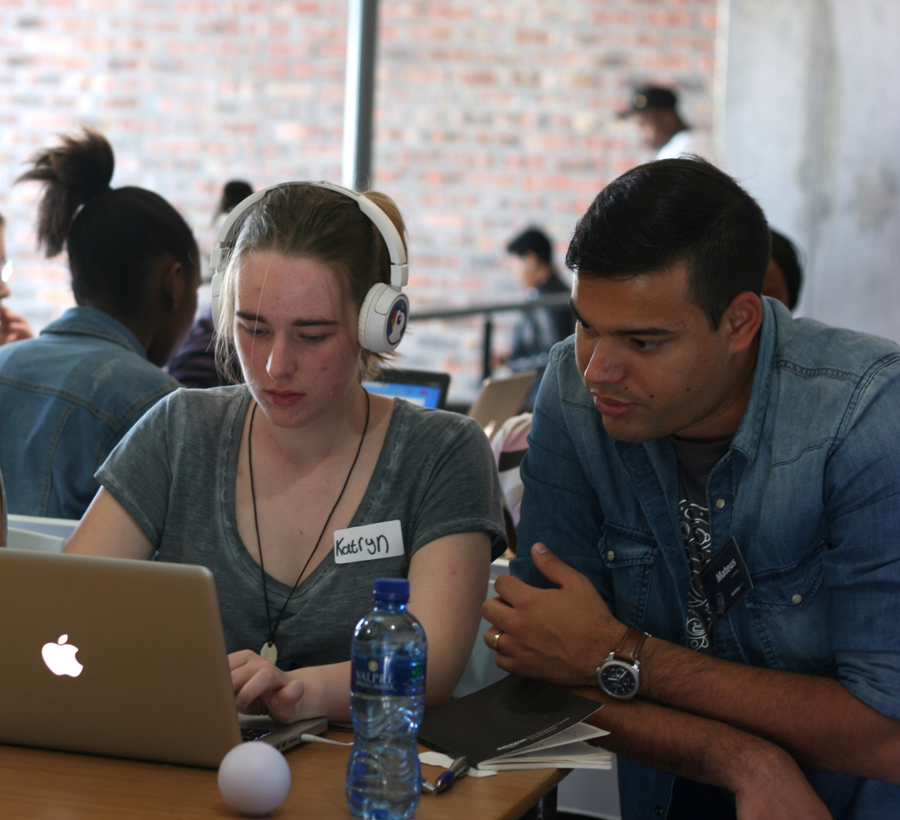

Who are we?
Code for Cape Town (Code4CT) is a programme that introduces young girls to basic web building skills
and exposes them to opportunities in the Information and Communication Technologies (ICT) sector.
Participants are trained in web development, design principles, as well as courses in professional
development. Code4CT aims to inspire a generation of young girls who are well-prepared with a toolkit of
technical and soft skills in order to achieve high impact in the workplace.
These are skills that everyone should have. Even if you have no intention of becoming a professional coder,
you will benefit from knowing how to think in this way in this increasingly computerized economy. A growing
number of permanent job positions that use information technology to deliver a product or a service are
becoming available in the local economy. It is estimated that nearly 75000 such jobs will come online in
South Africa within the next five years. These digital jobs will mostly be driven by the ICT, Business
Process Outsourcing (BPO), and the financial services industries. These are the fastest growing sectors
in our economy. They are also the sectors that have the highest demand for entry-level digital skills.
|  |  |
 |